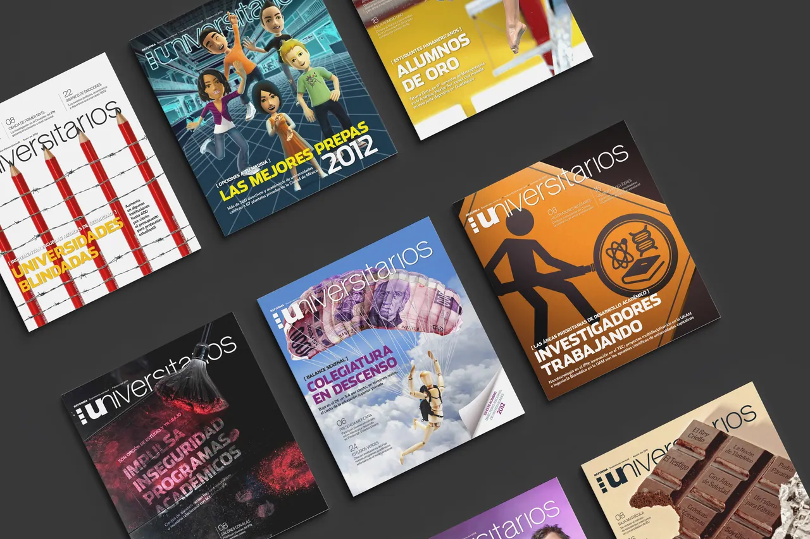

Supplement
‘Universitarios’ & ‘Posgrados’
Mexico’s next professionals decide their future early. These two monthly REFORMA supplements spoke to them, and to the universities and scholarship programs that wanted to reach them: “Universitarios” for undergraduates, “Posgrados” for graduate students.
A supplement has to win attention the moment it arrives, so the cover carries the strategy. Each issue’s lead story becomes one graphic metaphor a young reader grasps at a glance. I led both titles until early 2013, conceiving every cover with the editor: twelve a year for Universitarios, two for Posgrados.
- Role
- Art Director & Designer
- Client
- REFORMA Newspaper
- Project
- Monthly Magazine
- Years
- 2011–2013
- Photographers
- Enrique Ortiz, Carlos Figueroa
- Editor
- Carlos Carvallo
- Copywriters
- REFORMA Staff
The year’s best students, one color each
In its first edition, Los Alumnos del Año honored the 13 best undergraduates in Mexico City. Each was chosen by the rector or director of their own university, after REFORMA invited the city’s institutions of higher education to take part. The requirements: a GPA of at least 9.5, at least seven semesters completed and a range of extracurricular activities.
The cover is a wall of their portraits, each against its own color. The central pages, “Promesas de la ciudad”, line the 13 up as one ribbon of color panels, one student per school, each pointing to the student’s profile page and university.
Concept
From brief to idea
Concept, props, shoot, Photoshop
Every cover began with the same problem: how do you make a story about tuition, scholarships or a master’s degree something a young reader has to open? The editor set the lead story each month. I developed the idea, pitching a set of metaphors until one clicked with the team. Then I built it for real: sourcing and producing the props, producing the shoot and compositing the image in Photoshop. In those years, every idea had to exist in the physical world before it could exist on the page.
Falling tuition, made visible
Private tuition in Mexico City fell 5.4% in real terms. The cover shows it as a mannequin parachuting under a canopy of peso bills, built from real props and composited in Photoshop.
The spread “Baja costo escolar” carries the same figure over a green field, with the data and a campus beside it.
Visual metaphors
One powerful idea per cover
An array of concepts
- Colegiatura en descenso
- Private tuition falls 5.4%: a mannequin parachutes under a canopy of peso bills.
- Universidades blindadas
- Campuses add security: red pencils wrapped in barbed wire.
- Tareas patito
- Plagiarism without consequences: a rubber duck beside a real duckling.
- ¡Devóralos!
- The books you can’t miss: a chocolate bar printed with titles.
- Las maestrías más buscadas
- The most in-demand master’s degrees: binoculars whose lenses list the programs.
- Impulsan su éxito
- Support for outstanding students: a paper plane graded A, lifted by a fan.